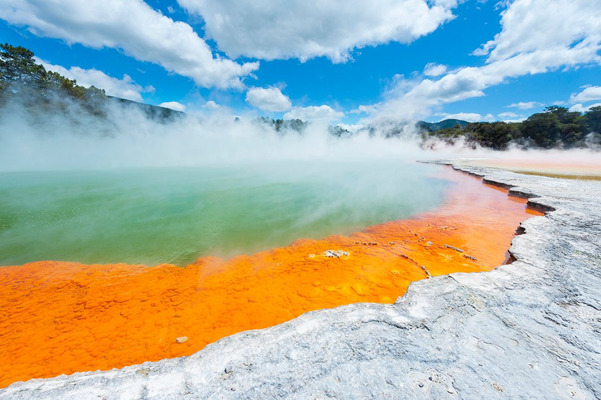

-

뉴질랜드 북섬
절벽으로 이루어진 해안선과 서핑하기 좋은 파도, 깨끗한 해변은 뉴질랜드 자랑인데요~ 뉴질랜드 북섬에 가신다면 바다를 즐기셔야 합니다. 오클랜드 서쪽의 피하비치는 검은 모래와사자바위가 유명하고, 코로만델 반도의 커시드럴 코브는 아치형 동굴로신비한 풍경이 특징입니다.
-

지열지대
와이오타푸 서멀 원더랜드 - 와이오타푸는 형형색색의 간헐천을 볼 수 있는 곳으로 예술가의 파레트, 샴페인 풀, 데빌스 배스, 데빌스 잉크팟 등이 유명 테푸이아 - 로토루아에서 가장 크고 유명한 지열 지대로 높이 20~30m까지 수증기가 솟아오르는 포후투가 유명 지옥의 문 - 끓는 수영장과 진흙, 유황 온천들을 경험할 수 있는 곳
-

와이모토 동굴 반딧불
와이토모 동굴은 반딧불이가 서식하고 있는 자연 동굴로 천정에 자리 잡은 반딧불이가 마치 은하수 처럼 펼쳐져 있어 환상적인 경험을 할 수 있는 곳인데요. 보트를 타고 아름다운 반딧불이를 감상할 수 있습니다.
-
와이너리
뉴질랜드는 호주와 함께 신세계 와인 생산국 중 하나죠. 90년대 이후로는 뉴질랜드의 와인 산업도 빠르게 발전하면서 뉴질랜드 전역에 와이너리가 많은데요. 포도밭의 아름다운 풍경을 즐기며 와인을 시음해 보셔도 좋습니다.
-

호비튼 투어
판타지를 좋아하세요? 신과 요정, 인간과 오크가 모두
모여 산다는 '중간계'. 들어보신 적 있으시죠?
그곳이 바로 뉴질랜드에 있는데요. 영화 ‘반지의 제왕’의
배경이 되었던 호빗마을 호비튼은 뉴질랜드 북섬여행에
빼놓을 수 없겠죠~? 호비튼 영화 세트장에 들러 44개의 호빗굴과,
빌보 배긴스의 집 앞 등을 관람해보세요!